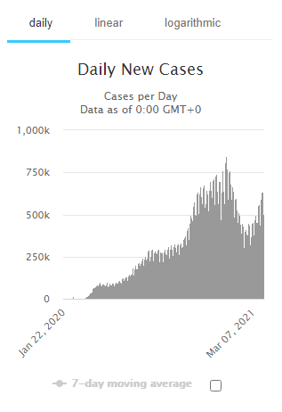
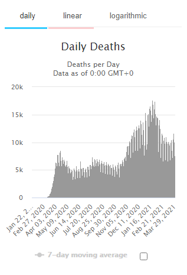

Coronavirus Cases
121,978,880
view by country
Deaths Cases
2,695,302
Recovered Cases
98,293,026
ACTIVE CASES
22,153,695
Show Graph
Currently Infected Patients
22,057,313(99.6%)
in Mild Condition
96,382 (0.4%)
Serious or Critical
CLOSED CASES
107,067,893
Show Graph
Cases which had an outcome
104,246,019(97%)
Recovered / Discharged
2,821,874(3%)
Deaths


Advertise
Your AD Here
Report coronavirus cases
| # | Country Others | Total Cases | New Cases | Total Deaths | New Deaths | Total Recovered | Active Cases | Serious Critical | Tot Cases/1M pop | Deaths /1M pop | Total Tests | Tests /1M pop | Population |
|---|---|---|---|---|---|---|---|---|---|---|---|---|---|
| 1 | USA | 31,158,388 | +60,800 | 565,063 | +922 | 23,666,438 | 6,926,887 | 8,740 | 93,724 | 1,700 | 403,159,000 | 1,212,700 | 332,447,357 |
| 2 | Brazil | 12,748,747 | +84,689 | 321,515 | +3,579 | 11,169,937 | 1,257,295 | 8,318 | 59,662 | 1,505 | 28,600,000 | 133,843 | 213,683,484 |
| 3 | India | 12,220,669 | +72,182 | 162,960 | +458 | 11,472,494 | 585,215 | 8,944 | 8,791 | 117 | 243,672,940 | 175,293 | 1,390,086,508 |
| 4 | Afghanistan | 56,517 | +63 | 2,489 | +5 | 51,550 | 2,478 | 1,117 | 1,428 | 63 | 348,243 | 8,799 | 39,576,135 |
| 5 | Albania | 125,157 | +434 | 2,235 | +8 | 91,271 | 31,651 | 46 | 43,526 | 777 | 554,522 | 192,847 | 2,875,452 |